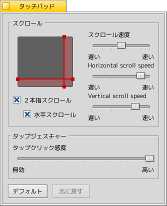

日本語
日本語 Français
Français Deutsch
Deutsch Italiano
Italiano Русский
Русский Español
Español Svenska
Svenska Українська
Українська 中文 ［中文］
中文 ［中文］ Português
Português Suomi
Suomi Slovenčina
Slovenčina Magyar
Magyar Português (Brazil)
Português (Brazil) English
English タッチパッド (Touchpad)
タッチパッド (Touchpad)
| Deskbar メニュー: | ||
| 場所: | /boot/system/preferences/Touchpad | |
| 設定ファイル: | ~/config/settings/Touchpad_settings |
ノートパソコンで使用している際に、タッチパネルに関連するいくつかの設定ができます。
赤の縦横の線を移動させることで、スクロール可能な領域 (灰色の部分をタッチパッドとした際の赤い部分) を設定できます。設定した領域で指を動かすとスクロールします。
右側のスライドバーでは、通常時のスクロール速度、水平方向のスクロール速度、および垂直方向のスクロール速度を設定できます。
スクロール速度を変更することで、タッチパネル上で指を動かしたときにどれだけのスピードでスクロールされるかを変えられます。
"2本指スクロール" を有効にするとタッチパッド上で 2 本の指を水平もしくは垂直の方向で平行にスライドさせると、その方向に画面上でもスクロールされるようになります。左手と右手の親指を使ってスクロールすると、反応しやすいです。
この設定を有効にすると、スクロール領域を設定しなくてもタッチパッド全体でスクロールできます。
下のスライドバーでタップクリックの感度を調整できます。タップクリックを認識しにくいなら感度を上げ、マウスポインタの移動をクリックとして認識してしまうなら感度を下げればよいでしょう。
| すべてをデフォルト値にリセットします。 | ||
| タッチパッドプレファレンスを起動した時点で有効だった設定に戻します。 |
タッチパッドに関するTips:
ボタンを使用せずにタッチパッドだけでドラッグ＆ドロップが出来ることをご存知ですか?
アイコンを一度クリックして指を離さずに少し待った後にもう一度クリックします。すると、マウスポインタに合わせてアイコンが移動するようになり、ドラッグできます。指を離すとドロップされます。
ドラッグをしているときに指がタッチパッドの境界線に達してしまった場合はどうすればよいでしょうか?
指を離すとドロップされてしまいます。しかし、ハードウェアによっては境界線に指を置いたままにしておくとマウスポインタが自動でその方向に進みます。